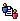

Agreement Status | Meaning |
 Proposed | TPA is in draft status. Use this status when you are creating the TPA so you can modify the TPA fields, data values in the IS document type, and agreement status. |
Agreed | TPA is in final status. In production, use this status to prevent the accidental deletion of the TPA and to speed up processing. When a TPA is in this status, you can change the Control Number. If the Data Status is Modifiable, you can also change inputs to TPA data variables in the IS document type. When the agreement status is Agreed, the data statuses take effect. Additionally, after the agreement status is Agreed, you cannot delete the TPA agreement. |
Disabled | TPA should not be used. For example, if Partner A is delinquent on payments to Partner B, Partner B might change Partner A's agreement status to Disabled so that no further transactions can occur. After Partner A pays his payments, however, Partner B would change the agreement status to Agreed. When a TPA is in the status Disabled, you can change the Control Number. |